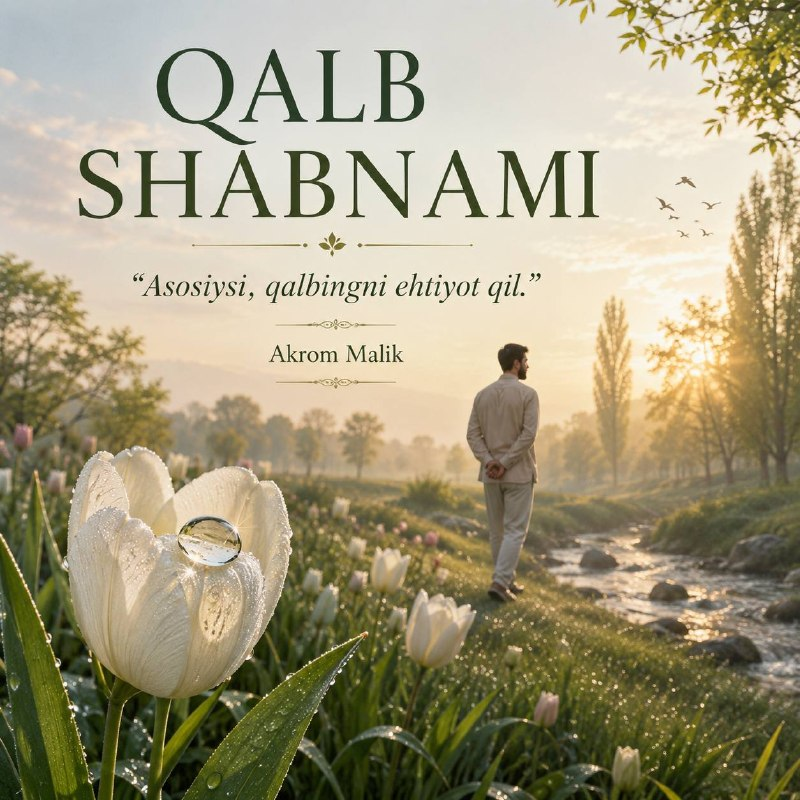

Qalb juda nozik xilqat. Uni bir tomchi shabnamga qiyoslasakmikin? Tongda gulning…

Qalb juda nozik xilqat. Uni bir tomchi shabnamga qiyoslasakmikin? Tongda gulning bargini makon tutgan shabnamning titrab turishi ko‘z oldingizga kelsin. Qalb ham shunday: titrab turadi, ozgina g‘ubor uni kirlaydi; halok bo‘lishi oson – quyosh uni bug‘lab yuboradi; shamol uni to‘kib tashlaydi. Shabnamni shu pok va yarqiroq holida saqlash naqadar murakkab bo‘lsa, qalbni ham shaffof va tiniq holda asrash shu qadar mashaqqatdir.
Qalb shudringini saqlash uchun uni soqchilar bilan himoyalash kerak. Birinchi soqchi aqldir. Aql qalbga keraksiz, kayfiyatni tushiradigan so‘zlarni kiritmasin. Siz haqingizdagi ayrim g‘iybatlar borki, ularni bilmasangiz, foydaliroq. Bilsangiz, faqat qayg‘uga tushasiz. Va boshqalarning ham ayrim yomon ishlari haqida g‘iybatlar mavjudki, ulardan xabarsiz qolsangiz, hech narsa yo‘qotmaysiz. Ularni bilmagan, ko‘rmagan yaxshi. Odamlar haqida yaxshi gumon va fikrda bo‘lmoq ular haqida chirkin haqiqatlarni bilib, ko‘ngil qolib, nafrat qilgandan yaxshiroqdir. Birovlarning xato va gunohlarini izlash va bu haqida gap tarqatish eng birinchi o‘rinda o‘sha g‘iybatchining o‘ziga ziyon keltiradi – qalbi bundan cheksiz ozor chekadi. Ikkinchidan, bu fasodni tarqatishning bir yo‘lidir. Uchinchidan, gunohkor bo‘lsa-da, uni sharmanda etish hech ham ma’qul emas, chunki tavba eshiklari ochiqdir. Albatta, bu o‘rinda zulm boshqa masala – kimningdir zulmga uchrayotganini ko‘rgan odam zulmga qarshi kurashmog‘i shart. Zulm hech qachon murosa qilib bo‘lmaydigan ishdir.
Inson istasa, istamasa, atrofidagi odamlar bilan bog‘langandir. Odamlar bir-birlariga yordam beradilar va yordam ko‘radilar. Agar insonlarning o‘zaro yordam rishtalari kesilsa, butun jamiyat baxtsizlikka mubtalo bo‘ladi. Yaxshilik ishi hech qachon to‘xtamasligi shart. Yaxshilikning eng a’losi – senga yomonlik qilganga yaxshilik qilishingdir. Bu yaxshilikni qilarkansan, minnat va qo‘pollikdan, kattazanlik va riyodan xoli bo‘lmoq talab etiladi.
Har qanday insonni yaxshilikdan to‘suvchi omil – boshqalar haqida yomon gumon va xayolda bo‘lmoqdir. “Falonchi sen haqingda bunday dedi!” – degan gap unga yaxshilik qilishdan har qanday odamni darhol to‘xtatadi, balki yomonlik qilishga rag‘bat beradi. Birgina gap bilan yaxshilik buloqlarining ko‘zini yopsa bo‘ladi. Inson o‘z og‘ziga egalik qilishdan ojiz-ku, boshqalarning og‘zini berkitib bo‘larimidi? Demak, g‘iybat va tuhmat so‘zlariga to‘g‘on qurish juda qiyin. Shu sababli insonning aql deb atalgan soqchisi har bir so‘zni tekshira olishi kerak. Buning uchun eshitilgan har jumlaga asir bo‘lmay, uning haqiqat yoki yolg‘onligini bilmoq lozim. Basharti, bu imkonsiz bo‘lsa, Xudoga bu ishni havola etishi va ilohiy hikmat ila haqiqat yuzaga chiqishini kutmog‘i matlub.
Shu sababli ulug‘lar bir tomonning so‘ziga tayanib, xulosa chiqarma deyishgan. Ikkinchi tarafni ham tingla, balki haqiqat shu ikki so‘z o‘rtasidadir?! Unday qila olmasang, sabr qil, kut. Daryoga cho‘kkan o‘lik, albatta, yuzaga qalqib chiqadi.
Asosiysi, qalbingni ehtiyot qil.
Akrom MALIK